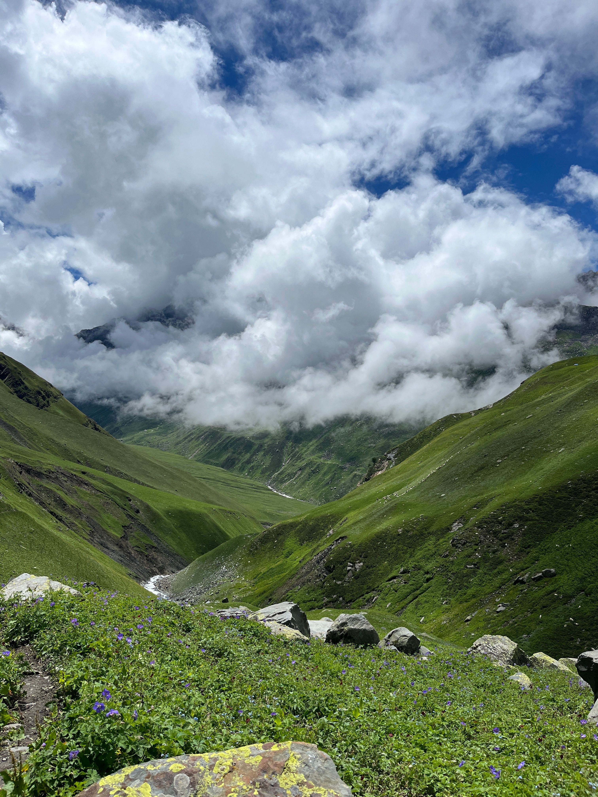
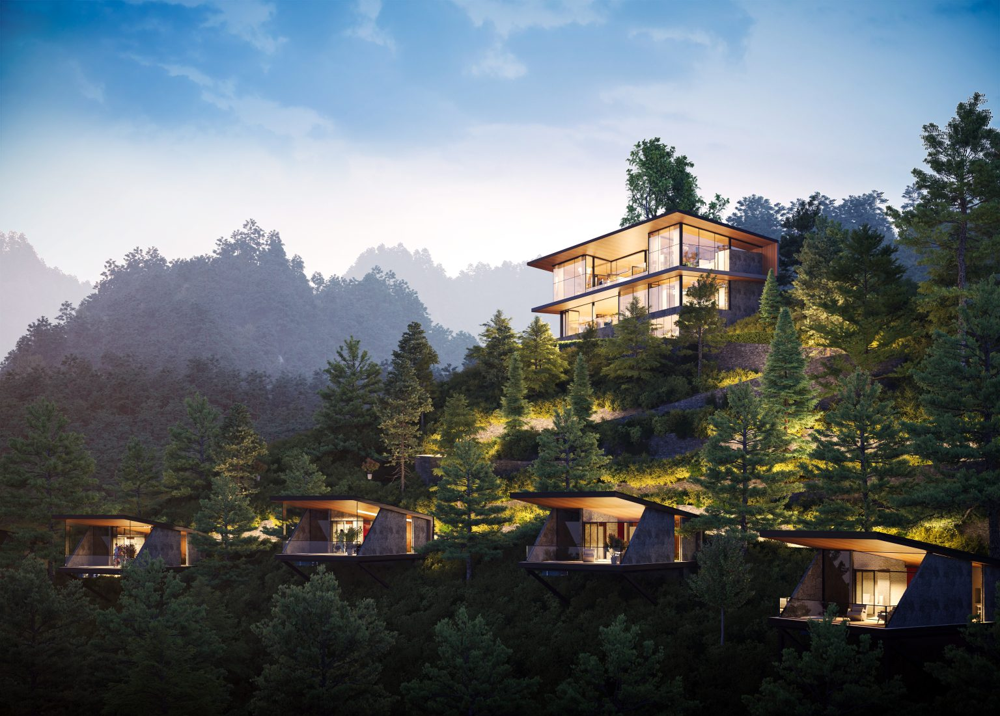
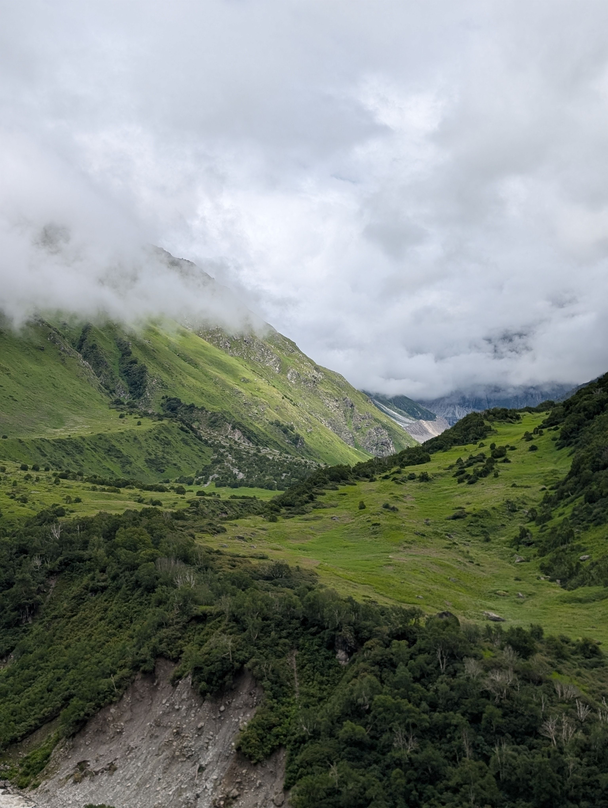
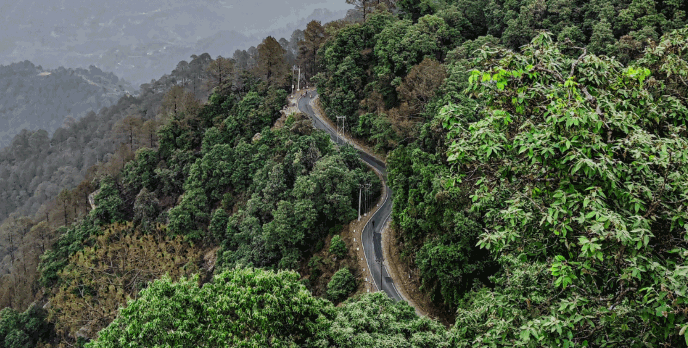
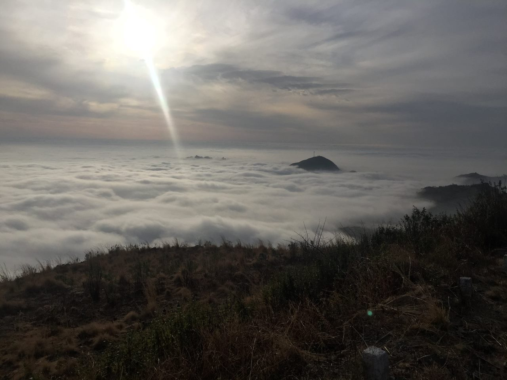
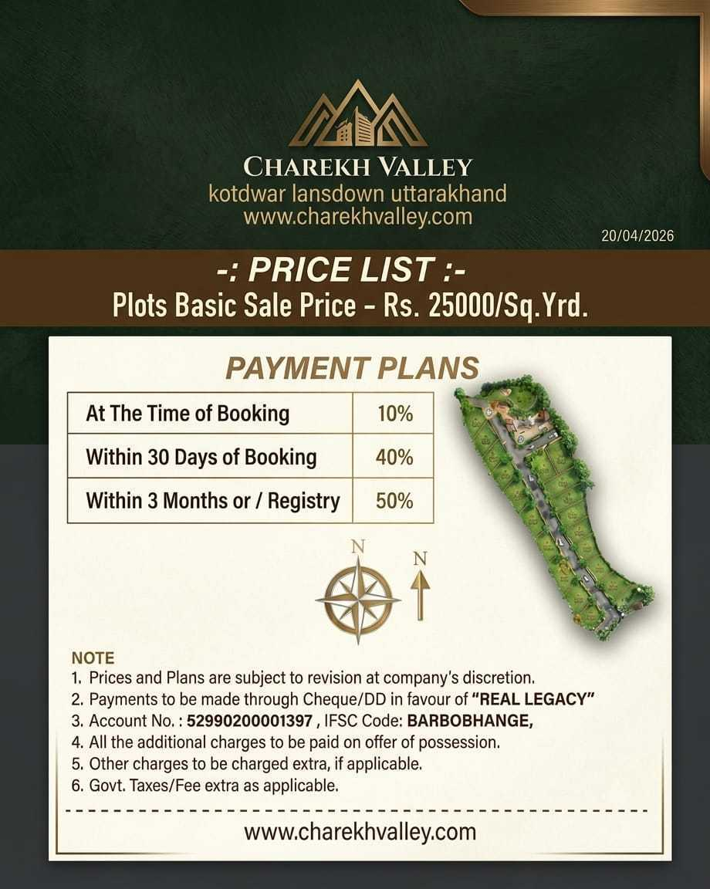
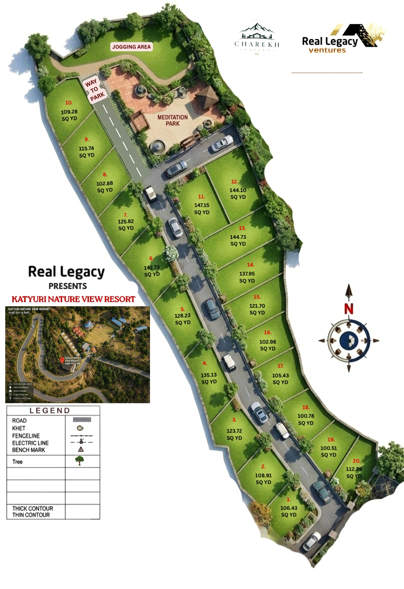
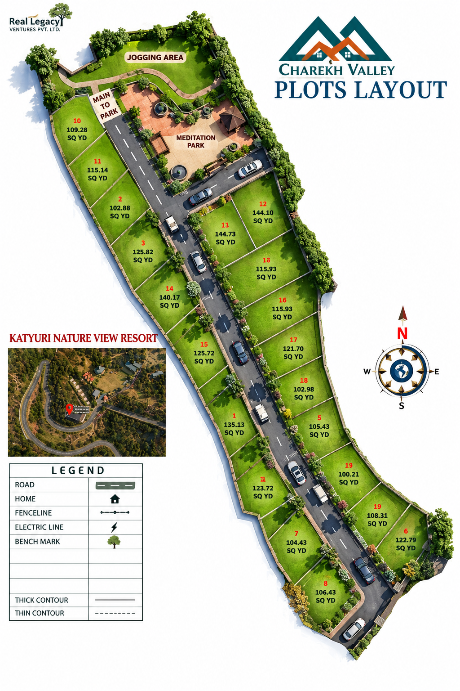
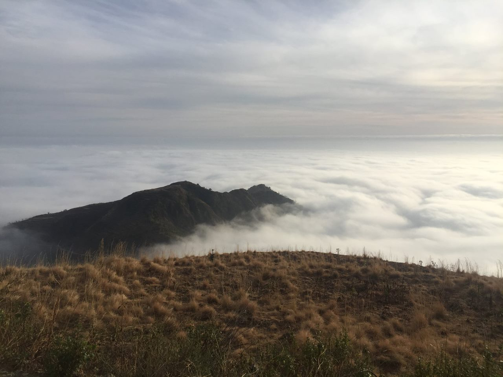

Charekh Valley Knowledge Hub
Explore our complete library of articles on hill station land investment, sustainable mountain home construction, pricing guides, and resort leasing opportunities in Uttarakhand.
45 articles and growing

Charekh Valley Plots: The Ultimate Guide to Owning Land in Uttarakhand's Hidden Paradise
Everything a first-time buyer needs in one place: location, plot sizes, legal clarity, resort access and the lifestyle that comes with owning land in Charekh Valley.
Read the GuideLatest Articles
Guides on buying, building, investing and visiting Charekh Valley.

Charekh Valley Itinerary: How to Plan the Ultimate Weekend Getaway
A simple two-day plan covering where to stay, what to see and how to make the most of a short escape to the Uttarakhand hills.
Read Article
Charekh Valley Travel Guide: Best Time to Visit, Things to Do & Where to Stay
Seasons, activities, stays and practical tips to help you plan a smooth and memorable trip to Charekh Valley.
Read Article
Trekking in Charekh Valley: A Beginner-Friendly Trail into Pristine Wilderness
An easy trail through forest and open slopes, with tips on what to carry, when to go and what you will see on the way.
Read Article
Camping Under the Stars: An Unforgettable Adventure in Charekh Valley
Clear mountain skies, quiet nights and campfire evenings: how to enjoy a peaceful camping trip in the valley.
Read Article
Exploring Charekh Valley: Untouched Nature, Serene Views & Peaceful Vibes
A walk through the valley's greenery, viewpoints and calm surroundings that make it a perfect break from city life.
Read Article
Escape the Crowds: Why Charekh Valley Beats Popular Hill Stations
Less traffic, cleaner air and more space: see why a quieter valley can be a better choice than a crowded tourist town.
Read Article
Why Charekh Valley Is Uttarakhand's Best-Kept Secret for Mountain Lovers
A closer look at the views, the peace and the location that make Charekh Valley special for people who love the mountains.
Read Article
Charekh Valley Plot Investment: Turn Your Himalayan Land into a Lucrative Homestay
How a plot can become a homestay that earns regular income from tourists, and what to plan before you start.
Read Article
The Rise of Eco-Tourism: Why Eco-Resort Plots in Charekh Valley Are Thriving
Travellers now look for nature-friendly stays. Learn why eco-resort land in Charekh Valley is gaining attention.
Read Article
Best Hill Station Plots in Charekh, Uttarakhand
Discover why Charekh offers the ultimate hill station plot experience with breathtaking valley views and modern gated amenities.
Read Article
Best Valley Plots in Uttarakhand: Your Ultimate Selection Guide
A comprehensive review of what makes valley plots in Uttarakhand superior for second homes and long-term land banking.
Read Article
How to Build Your Dream Holiday Home in Uttarakhand
Step-by-step guidance on architectural design, local approvals, material selection, and building your mountain getaway.
Read ArticleInvestment Potential & ROI Analysis | Charekh Valley
Analyze high capital appreciation, recurring resort rental yields, and ROI benchmarks for Charekh Valley plots.
Read Article
Charekh Valley Price List & Payment Plan Guide
Explore plot dimensions, transparent pricing breakdowns, and flexible payment options for available resort plots.
Read Article
Charekh Valley Uttarakhand: Project Overview, Location & Guide
Your master reference guide covering plot locations, resort amenities, infrastructure, and FAQs.
Read ArticleCharekh Valley vs. Other Hill Plots: What Sets Us Apart
Compare isolated land parcels with Charekh Valley's fully integrated operational resort community framework.
Read Article
Cottage vs. Villa: What to Build on Your Mountain Plot
Weighing the pros, costs, and architectural aesthetics of cozy mountain cottages versus luxury hillside villas.
Read Article
Building an Eco-Friendly Mountain Home on a Forest Plot
Sustainable building practices, solar energy integration, and rainwater harvesting for green hill living.
Read ArticleHill Land vs. City Flat: The Ultimate Lifestyle Switch
Why urban professionals are shifting capital from crowded city apartments to tangible, high-growth hill land.
Read Article
The Essential Hill Plot Buying Checklist
Key legal verifications, title clearances, access checks, and utility validations before buying mountain property.
Read Article
Himalayan Land Investment Guide: Securing Your Future
Expert insights into navigating Himalayan real estate regulations, micro-markets, and long-term security.
Read Article
Owning Plots Inside Katyuri Resort: The Ultimate Privilege
Explore the exclusive integration of residential plots directly adjacent to an operating five-star hospitality resort.
Read ArticleHow Resort Lease-Back Programs Generate Passive Income
Understanding how your holiday chalet can earn rental revenue through professional resort management.
Read ArticleInspirational Mountain Home Design & Architecture Ideas
Sloped roofs, expansive wooden decks, large glass viewing galleries, and modern alpine architectural trends.
Read Article
Plots in Charekh, Uttarakhand: Complete Buyer's Guide
Everything you need to know about purchasing secure, freehold plots in the pristine hills of Charekh.
Read Article
Investing in Plots in Uttarakhand: Market Trends & Tips
An overview of Uttarakhand's real estate growth corridors, connectivity upgrades, and land opportunities.
Read Article
Why Buying Plots Near Resorts in Uttarakhand is a Smart Move
The unbeatable convenience and hospitality privileges of owning property adjacent to operational luxury resorts.
Read Article
Residential Plots in Uttarakhand: Freehold vs. Leasehold
Understanding land titles, ownership security, and registry laws when buying residential plots in the hills.
Read Article
Owning a Second Home in Uttarakhand: The Ultimate Escape
Why urban families are embracing the mountain lifestyle for wellness, peace, and generational legacy.
Read Article
Best Plots Under ₹20 Lakh in Charekh Valley, Charekh, Uttarakhand
A budget-friendly look at plot sizes, what to expect and how to choose wisely if you are buying your first hill plot.
Read Article
Buying Plots vs Ready Villa in Charekh Valley, Charekh, Uttarakhand
Build your own home on a plot or move into a ready villa? Compare cost, freedom, time and long-term value.
Read Article
Can Outsiders Buy Land in Uttarakhand? Rules for Non-Residents
A simple explanation of what non-residents should check before buying a plot in Uttarakhand.
Read ArticleCharekh Valley, Charekh Uttarakhand Weather: Month-by-Month Guide
Know what to pack and when to visit with a simple month-by-month look at the weather in the hills.
Read Article
Home Loan for Plots in Charekh Valley, Charekh, Uttarakhand
How plot loans work, what banks usually ask for and how to prepare your documents.
Read Article
How to Verify a Hill Plot in Charekh Valley, Charekh, Uttarakhand
A step-by-step checklist to verify ownership, papers and location before you pay for a plot.
Read ArticleIs Charekh Valley, Charekh Uttarakhand Safe? Roads, Water & Electricity
Everything buyers ask about road access, water supply, electricity and everyday safety in the valley.
Read ArticleNearest Railway Station & Airport to Charekh Valley, Charekh Uttarakhand
Plan your journey with the closest railway station and airport and how to continue by road.
Read Article
NRI Guide: Buying Plots in Charekh Valley, Charekh, Uttarakhand
A guide for NRIs on checking rules, handling paperwork and buying a plot from abroad.
Read ArticlePlots in Charekh Valley, Charekh Uttarakhand vs Ranikhet & Almora
Compare location, crowd levels, lifestyle and investment appeal across popular hill areas.
Read ArticlePlots vs Gold, FD & Mutual Funds in Charekh Valley, Charekh Uttarakhand
How hill plots compare with other popular investments for long-term goals.
Read Article
Real Estate Trends 2026-27: Plots in Charekh Valley, Charekh Uttarakhand
What is shaping demand for hill plots in Uttarakhand and what buyers should watch.
Read Article
Registry, Stamp Duty & Mutation for Plots in Charekh Valley, Charekh Uttarakhand
The registration process explained in plain steps, from stamp duty to mutation in your name.
Read Article
Weekend Home Near Delhi NCR: Plots in Charekh Valley, Charekh Uttarakhand
Why city families are looking at the hills for a quiet weekend home within reach of Delhi NCR.
Read Article
Work From the Mountains: Charekh Valley, Charekh Uttarakhand
Is a remote-work home in the hills realistic? What to consider before making the move.
Read ArticleReady to Own a Plot in Charekh Valley?
Talk to our team for plot availability, pricing and a site visit.
Enquire Now